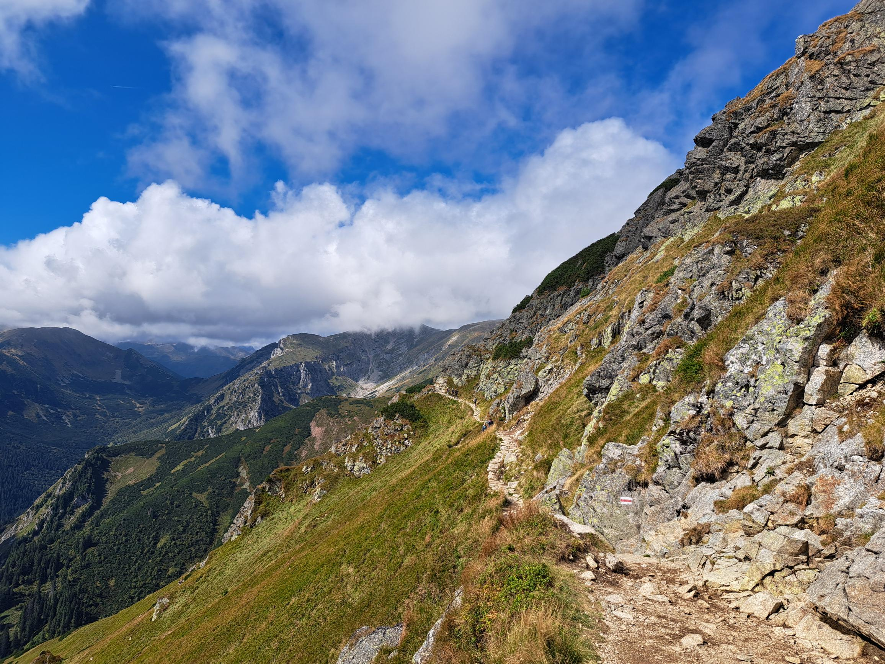
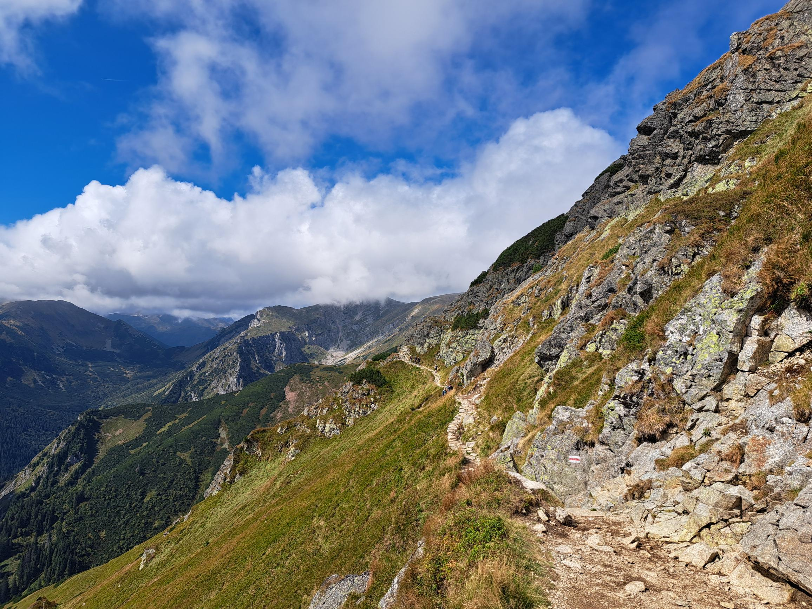

Bieganie
Bieganie towarzyszy mi od zawsze. Już w szkole podstawowej nie raz brałam udział w zawodach międzyszkolnych i rejonowych, mimo iż nie trenowałam w żadnym klubie. Faktyczny zapał do tego sportu pojawił się kiedy rozpoczęłam studia. Rozpisałam sobie plan treningowy, którego dość ściśle staram się trzymać.
Regularnie biorę udział w różnych imprezach biegowych między innymi:
Ścianka wspinaczkowa
Jest to całkowicie nowe hobby, które traktuję zawsze bardziej jako spotaknie ze znajomymi niż pod kątem osiągania sukcesów.
Turystyka górska
Natomiast najbardziej uwielbiam chodzić po górach. Wraz z rodziną kilka lat temu skompletowałam KGP, czyli Koronę Gór Polski. Jest to 28 szczytów, w każdym paśmie górskim. Zajęło nam to jedynie 3 mięsiące, które do dziś wspominam ze szczególnym sentymentem. Tutaj kilka zdjęć z różnych wypraw w moje ulubione miejsca, czyli Tatry i Bieszczady.
 
